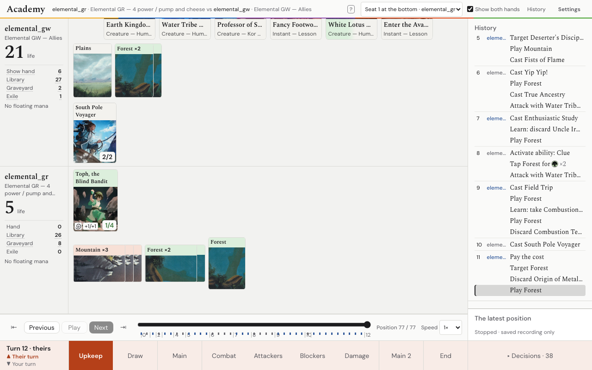
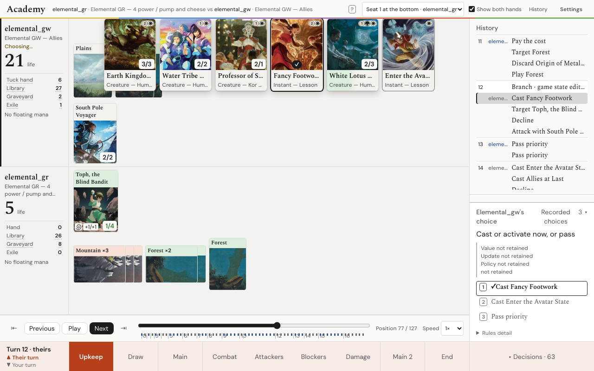

Driven as a first user from Python against a debug build of this branch, then through managym academy replay in headless Chromium.
Elemental GR vs GW, seed 7, played to a turn-12 priority (38 steps). Ran the docs/engine-python.md example: moved Toph's animated Forest to the library bottom and set life to 5.
probe: opp life 5 blocker present? False
probe: library count [25, 0, 8, 8, ...] -> [26, 0, 7, 8, ...]
cold digest matches: True probe digest == branch: True
journal: [{"at_action": 38, "op": "game_state_edits", "edits": [{"kind": "move_permanent", "permanent": 115, "to": "library_bottom"}, {"kind": "set_life", "player": 0, "life": 5}]}]
tap -> tapped=True dmg=0 +1=2
damage -> dmg=1
counters stun -> counters={'stun': 1}
exile -> gone; opp zones exile 0 -> 1
graveyard -> gone; graveyard 8 -> 9
life -> agent life 1
all edits stable; original unchanged after all: True
At declare blockers (Gray Ogre mirror): moving the attacker leaves only "no block"; tapping the focal blocker is refused; lethal damage kills the creature at the next check; life 0 ends the game; editing a finished game is refused. Determinize and reshuffle restores with edits cold-replay to the same digest.
unknown permanent -> game state edits: unknown permanent 99999 negative damage -> game state edits: damage must be nonnegative bad player -> game state edits: player must be 0 or 1 (at construction) unknown counter -> game state edits: unknown counter "bogus" (at construction) move twice -> game state edits: permanent 115 already moved in this batch bad destination -> unknown variant `hand`, expected one of `graveyard`, `exile`, `library_bottom` forced + edits -> game_state_edits cannot be combined with forced_first_action before reset -> intervention before reset
A batch printed as <builtins.GameStateEdit object at 0x…>, so a logged or failing batch said nothing. GameStateEdit now reprs as the call that rebuilds it and compares and hashes by content:
GameStateEdit.set_life(0, 5) GameStateEdit.move_permanent(3, to='graveyard')
Covered by test_edits_read_as_their_constructor_calls; the five edit tests and the public API check pass.
The edited branch replays with the edited board (life 5, the Forest creature gone):

After 25 more actions, History shows Branch · game state edited at turn 12. Only the branch kind reaches the browser, never edit ids or destinations.

A replay that ends exactly at the edit shows no branch note: the note rides the next recorded choice (same for determinize/reshuffle). The label truncates to "game state edit…" in the History column.
edit_game_state returns that forced decision rather than skipping it. Left as is; noted in scratch/questions.md.